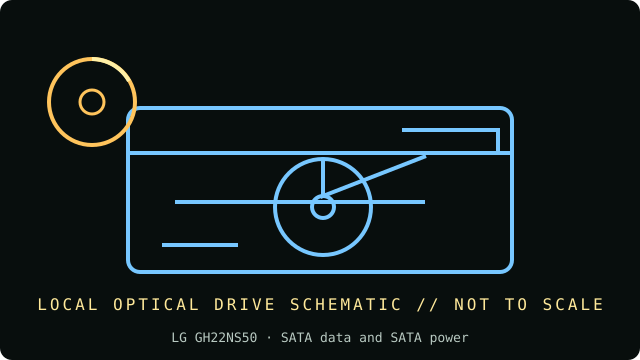

[ INDIVIDUAL COMPONENT // OPTICAL DRIVES ]
LG GH22NS50
Internal SATA Super-Multi DVD/CD writer with broad recordable-disc support; do not substitute IDE-model instructions. Specifications below are tied to the exact model identifiers and cited documentation; nearby product families may differ.

IDENTIFICATION: LG GH22NS50 · confirm full model/revision marking and compare it with the cited source before assigning a host or media capability.
Verified specifications
| Catalog subcategory | DVD writers |
|---|---|
| Exact product identifier | LG GH22NS50 |
| Era / product type | Internal 22× SATA Super-Multi DVD writer |
| Read/write and media | Writes DVD±R up to 22×, DVD+R DL up to 16×, DVD-R DL up to 12×, DVD-RAM up to 12×, DVD+RW up to 8×, DVD-RW up to 6×, CD-R up to 48× and CD-RW up to 32×; reads DVD-ROM up to 16×, DVD-RAM up to 12× and CD-ROM up to 48×. |
| Interface and mechanics | SATA data and SATA power; internal 5.25-inch half-height tray drive, approx. 146 × 165 × 41.3 mm; 2 MB buffer. |
| Variant and host cautions | Exact GH22NS50 suffix and production revision determine firmware/region and supported media strategies. It requires SATA power/data (not 40-pin PATA); confirm case depth and optical-bay screw locations. Do not assume a host OS has working burning software. |
Optical-media preservation notes
For DVD-RAM or RW media, document cartridge/non-cartridge form, filesystem, formatting, and defect checks. For long-term holdings, maintain independent copies and periodic checksum verification rather than relying on a single rewriteable disc.
- Handle discs by the edge or center hub; do not write on the data side or add adhesive labels over the recording surface.
- Store in a clean, cool, dry, dark environment in protective cases. Keep original media unmodified and make verified working images for access.
- Retain checksums, drive model/firmware, software, read errors, media type, and acquisition/handling history with each preservation image.
Identification and host checks
- Confirm the complete manufacturer label, model suffix, revision, serial/date code, and supplied bezel, cable, adapter, or bracket before installation.
- Exact GH22NS50 suffix and production revision determine firmware/region and supported media strategies. It requires SATA power/data (not 40-pin PATA); confirm case depth and optical-bay screw locations. Do not assume a host OS has working burning software.
- For DVD-RAM or RW media, document cartridge/non-cartridge form, filesystem, formatting, and defect checks. For long-term holdings, maintain independent copies and periodic checksum verification rather than relying on a single rewriteable disc.
Manufacturer, standards and preservation sources
- LG — GH22NS50 product pageManufacturer specification for SATA, form factor, recording speeds and media support.
- LG GH22NS50 user manualModel-specific manual and installation reference.
- Ecma International — DVD standards catalogueStandards catalogue for DVD-ROM and recordable DVD formats.
- NIST — Care and handling of CDs and DVDs: Guide for librarians and archivistsPreservation practice for optical discs; follow applicable media-specific guidance and keep redundant verified copies.
- Library of Congress — Sustainability of Digital FormatsFormat-sustainability reference for planning access, preservation, and migration of digital content.
Manufacturer ratings describe supported media and maximum speeds, not guaranteed read quality from a particular aged disc. Standards and preservation guidance do not certify this drive or a media batch.